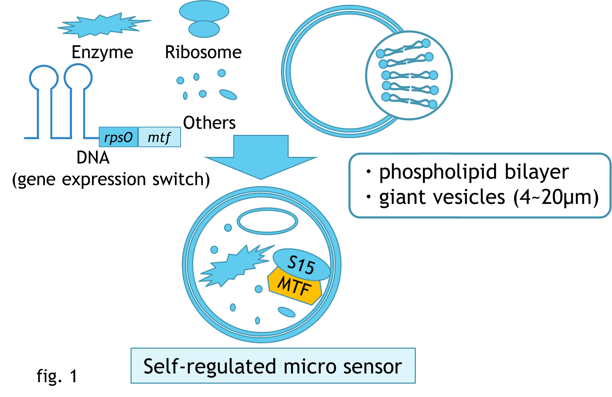

BIOMOD Team Tsukuba - self-regulated micro sensor
Abstract
We plan to create a cell-like sensor in response to external conditions.
To design the micro sensor in a simple and self-regulated manner,
we mimic the cellular structures, which are simply divided into two parts,
a compartment in membrane structure and a chemical mixture in which biochemical reactions and regulations occur.
In this study, we optimized a phospholipid bilayer structure as the container for the micro sensor,
and a gene expression system reconstituted from the purified elements to proceed the reactions and regulations.
Self-regulation is relied on the structural changes of the RNA sequence, which can form either a stem-loop or a pseudoknot.
The transition between the two structures can be self-regulated by the downstream protein molecule S15.
The functional protein molecule sensing the metal ions in the environment is co-expressed with S15.
The micro sensor is supposed to be used for testing the harmful metal ions in the organisms.
Fig. 1 shows the schematic diagram of our study.
S15, which is the gene product of rpsO, is fused with the functional protein MTF, which is used to sense the metal ions in the environment.
Introduction
We design a cell-like sensor in response to external conditions with self-regulation system.
Self-regulation is relied on the structural changes of RNA sequence, which can form either a stem-loop or a pseudoknot.
...
Materials and methods
・Preparation of vesicles [1]
1. W/O emulsions were prepared by mixing emulsification.
Add 2.5ml of hexane solution (3wt% Span 80 and 0.1wt% stearylamine) to 0.5ml of 50mM Tris-HCl (0.01M calcein, pH8.0),
...
Result
・Construction of vesicles
We observed vesicles with a fluorescence microscope (fig.5).
We found some sphere structures in the pictures.
...
Summary and future work
Here, we reported the design of a self-regulatory cell-like sensor, and successfully produced the micro size vesicles and synthesized the gene production.
The self-regulatory switch was partially done and
...